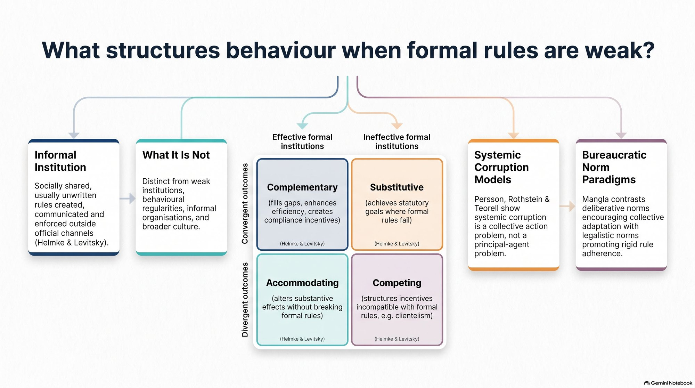
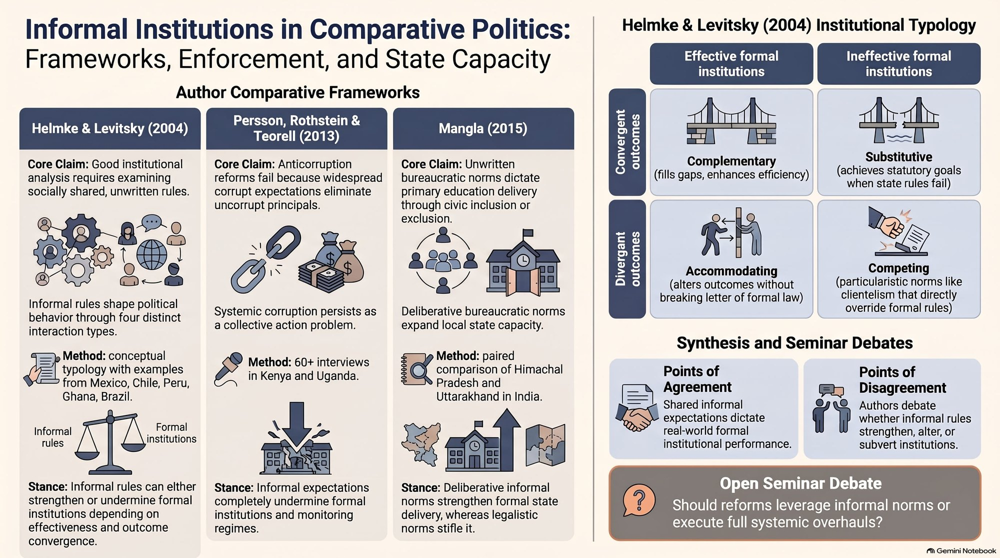
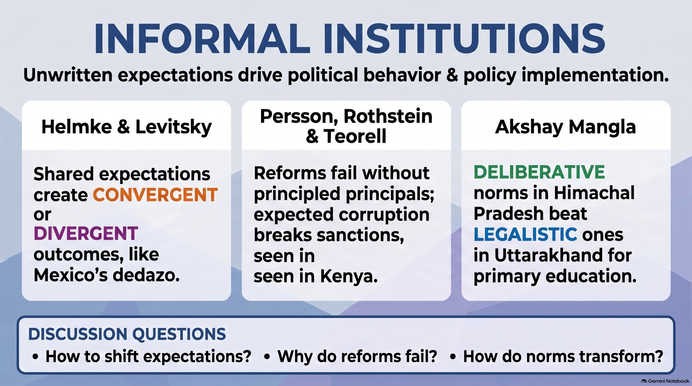

The Classroom · Weak Institutions · Class 9 · 24 Nov 2026
Informal Institutions
When formal rules are weak, unwritten ones often decide what happens. Helmke and Levitsky give a definition and four types of informal institution, Brinks traces informal rules about which police killings go unpunished in Brazil and Argentina, Persson, Rothstein and Teorell argue that anticorruption reforms fail because systemic corruption is a collective action problem, and Mangla shows unwritten bureaucratic norms making Himachal Pradesh's schools work better than Uttarakhand's.
1 At a glance 30 seconds
Key questions
- When formal rules are weak, what actually structures political behaviour?
- How do informal rules interact with formal ones: do they undermine, replace, bend or strengthen them?
- Why do anticorruption reforms fail where corruption is the norm?
- Can unwritten bureaucratic norms build state capacity under the same formal rules?
Key concepts
Informal institution
Socially shared rules, usually unwritten, created, communicated and enforced outside officially sanctioned channels. — Helmke & Levitsky (2004)
Weak institution vs informal institution
A formal rule can be ineffective without any informal rule behind it; weakness is not the same as informality. — Helmke & Levitsky (2004)
Four types
Complementary (effective formal, convergent), accommodating (effective formal, divergent), competing (ineffective formal, divergent), substitutive (ineffective formal, convergent). — Helmke & Levitsky (2004)
Principal-agent view of corruption
Corruption as agents exploiting information gaps, fixed by monitoring and sanctions from principled principals. — Persson, Rothstein & Teorell (2013), criticising it
Corruption as a collective action problem
Where corruption is expected, honesty does not pay, so no one has an interest in enforcing reform: a second-order collective action problem. — Persson, Rothstein & Teorell (2013)
Bureaucratic norms
Unwritten rules that guide public officials in how they apply policy and deal with citizens. — Mangla (2015)
Deliberative vs legalistic norms
Deliberative: officials adapt policy locally and work with civic groups; legalistic: strict rule-following and hierarchy that sideline citizens. — Mangla (2015)
Tap a concept for its definition.
What you get out of it
- Good institutional analysis needs both formal and informal rules: the real incentives can sit in the unwritten ones.
- Informal rules cut both ways: they can subvert weak formal rules (corruption, police impunity) or make them work (Himachal Pradesh).
- Systemic corruption is an equilibrium of shared expectations, so fixing individual incentives is not enough; expectations have to shift.
- The same formal policy produces different results depending on the unwritten norms of the bureaucracy that implements it.
Cases and evidence
- Mexico's dedazo and concertacesiones; Chile's Concertación; Peru's rondas campesinas Helmke & Levitsky (2004)
Examples for the typology: presidential succession by unwritten rule; informal electoral dispute deals (substitutive); executive-legislative power-sharing (accommodating); self-defence patrols where courts and police failed (substitutive). - Kenya and Uganda Persson, Rothstein & Teorell (2013)
Interviews with more than 60 respondents, from anticorruption officials to NGO staff and journalists: corruption is seen as what everyone else does. - Primary education in Himachal Pradesh vs Uttarakhand Mangla (2015)
Over 500 interviews and focus groups. Himachal outperforms: teacher absence 21.2% vs 32.8%; fifth-graders reading a basic paragraph 89.4% vs 75.8% (ASER 2011). - Police killings in five South American cities Brinks (2006)
São Paulo, Salvador da Bahia, Buenos Aires, Córdoba and Montevideo. São Paulo police killed more than 1,400 people in 1992; conviction rates for accused officers are about 7% in São Paulo, under 5% in Salvador and under 20% in Buenos Aires. Brinks finds an informal rule permitting killings of marginal people in Salvador, of especially violent criminals in Buenos Aires and São Paulo, and none in Córdoba or Uruguay.
The readings
| Gretchen Helmke & Steven Levitsky (2004) | Informal Institutions and Comparative Politics: A Research Agenda · Perspectives on Politics 2(4): 725–740 A definition and a four-way typology for bringing unwritten rules into institutional analysis. |
| Daniel M. Brinks (2006) | The Rule of (Non)Law: Prosecuting Police Killings in Brazil and Argentina · Ch. 10 in Helmke & Levitsky (eds.), Informal Institutions and Democracy, pp. 201–226 Police impunity follows informal rules about who may be killed, enforced even against prosecutors and judges who try to apply the law. |
| Anna Persson, Bo Rothstein & Jan Teorell (2013) | Why Anticorruption Reforms Fail: Systemic Corruption as a Collective Action Problem · Governance 26(3): 449–471 Reforms assume principled principals who do not exist where corruption is the expected behaviour. |
| Akshay Mangla (2015) | Bureaucratic Norms and State Capacity in India: Implementing Primary Education in the Himalayan Region · Asian Survey 55(5): 882–908 Deliberative bureaucratic norms explain why Himachal Pradesh delivers primary education better than Uttarakhand. |
Where this fits in the course
Last week asked why citizens break the state's rules. This class asks what fills the gap when formal rules are weak: unwritten rules that people share, expect and enforce. It builds on Brinks, Levitsky and Murillo's types of institutional weakness (29 Oct) and Helmke and Rath on democratic norms (3 Nov), and sets up forbearance (26 Nov), where the state itself chooses not to enforce.
- 1Recognizing Institutions
- 2The Strength of Institutions
- 3Institutional Weakness and Democracy
- 4Institutional Weakness and Development
- 5State Capacity
- 6Society's Role in Building State Capacity
- 7Delegation, Discretion, Ambiguity and Agency
- 8Non-Compliance
- 9Informal Institutions
- 10Forbearance
- 11Institutional Ambition
- 12Institutional Stability and Fragility
- 13Exogenous Institutional Strengthening
- 14Endogenous Institutional Strengthening
- 15In-class exam
2 Listen and look
Two takes on the same readings: pick the length that fits your commute.

Note: Made before the Brinks chapter was added, so it covers Helmke and Levitsky, Persson et al. and Mangla only.

Note: Made before Brinks was added. 'Divergant' should read 'Divergent', and the Persson et al. line is loosely worded: their point is that reforms assume 'principled principals' who are missing where corruption is the norm.

Note: Made before Brinks was added. It repeats 'seen in', and Persson et al.'s interviews were in Kenya and Uganda.
3 Test your understanding
4 quick questions, then 2 to answer in your own words. Nothing is saved or sent.
In Helmke and Levitsky's typology, an informal institution that coexists with ineffective formal rules and produces outcomes compatible with them is…
Substitutive institutions achieve what the formal rules were meant to but failed to, e.g. Peru's rondas campesinas.
Chile's Concertación power-sharing under the 1980 Constitution is Helmke and Levitsky's example of…
It changed the effects of strong presidential rules without violating them: against the spirit, not the letter.
Why, according to Persson, Rothstein and Teorell, do principal-agent reforms fail in systemically corrupt countries?
Corruption is a collective action problem: enforcing honesty is itself a second-order collective action problem.
What distinguishes Himachal Pradesh's bureaucracy in Mangla's account?
Both states share national policy and formal structures; Uttarakhand's legalistic norms do worse.
Is systemic corruption an informal institution in Helmke and Levitsky's sense? Argue one way.
Yes if corruption follows shared rules with sanctions for those who break them (Italy's norms 'more powerful than the laws of the state'); then it is a competing informal institution. No if it is only a widespread behaviour pattern driven by expectations, with no rule enforced outside official channels; Persson et al.'s coordination framing sits between the two.
How do Mangla and Persson et al. disagree on what informality does to state capacity?
For Persson et al., unwritten expectations sustain corruption and defeat formal reform. For Mangla, unwritten bureaucratic norms can build capacity, making the same formal policy work better. Informality is not inherently weakening; it depends on what the shared norms prescribe.
Podcasts and infographics are generated with Google NotebookLM from the course readings; the brief and quiz are drafted with Claude from the readings and syllabus. I curate what goes up, but AI-generated material can contain mistakes. Use these pages alongside the readings and seminars, and check anything important against the original texts.